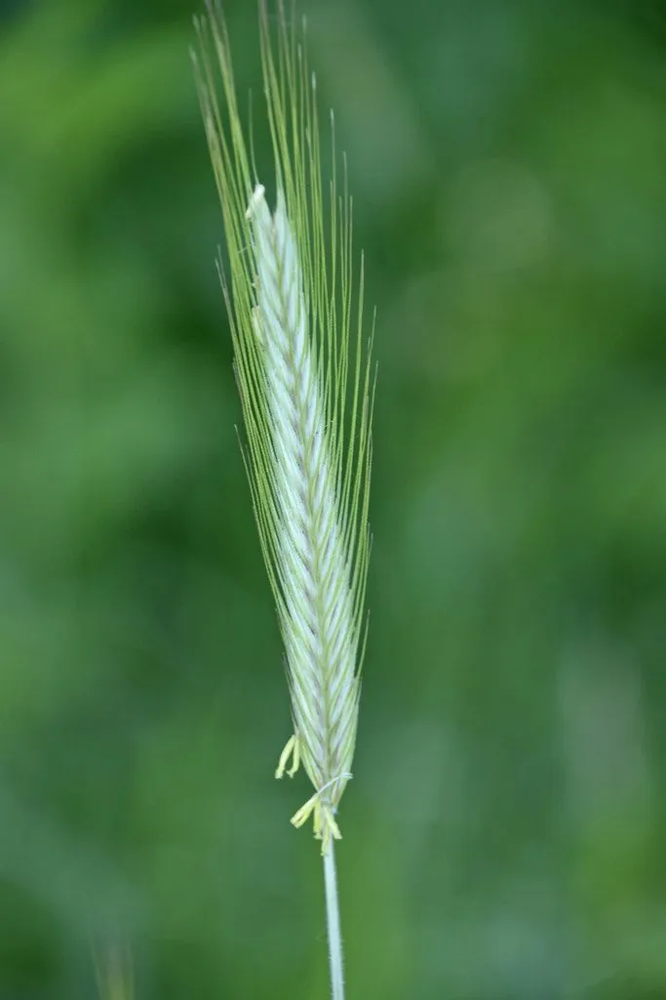

农作物与经济植物 · 植物界
黑麦 Secale cereale

黑麦耐寒、耐瘠薄，可制黑麦面包和麦芽，是北欧与东欧重要的粮食作物，也常用作饲草和绿肥作物。
- 分类
- 门被子植物门纲单子叶植物纲目禾本目科禾本科属黑麦属
- 栖息环境
- 温带与寒温带平原、山地，耐寒耐旱耐瘠薄
- 地理分布
- 原产西亚与东欧，现主产于欧洲、俄罗斯、中国北方等地
- 保护级别
- 暂无评估（栽培作物）
物种志
黑麦是一年生或二年生草本，株高 1–2 m，须根系，茎秆粗壮、有弹性。叶片披针形，叶耳小。穗状花序顶生，麦穗较长，小穗含 2–3 朵小花，颖片有芒。籽粒细长，呈灰褐色或黄褐色，腹面有纵沟。黑麦耐寒性极强，能在寒冷地区越冬。
黑麦原产西亚与东欧一带，由野黑麦驯化而来，是北欧、东欧和俄罗斯的重要粮食作物。它耐寒、耐旱、耐瘠薄，能在其他麦类难以生长的寒冷贫瘠地区种植，也常作饲料和绿肥。黑麦籽粒可制黑麦面包、黑麦粉和麦芽，用于酿造和烘焙；茎叶可作饲草，根系能改良土壤。黑麦与小麦杂交可产生小黑麦，兼具两者的优点。中国北方与高寒地区有少量栽培。
形态与习性
- 株高1–2 m
- 穗穗状花序，颖片有芒
- 籽粒细长，灰褐或黄褐色
- 用途黑麦面包、麦芽、饲料
- 特性耐寒耐瘠薄
趣味知识
- 黑麦非常耐寒，能在寒冷的北欧和西伯利亚地区越冬。
- 黑麦面包颜色深、口感扎实，是东欧和北欧的传统主食。
- 黑麦与小麦杂交可得到小黑麦，兼具两者优点。